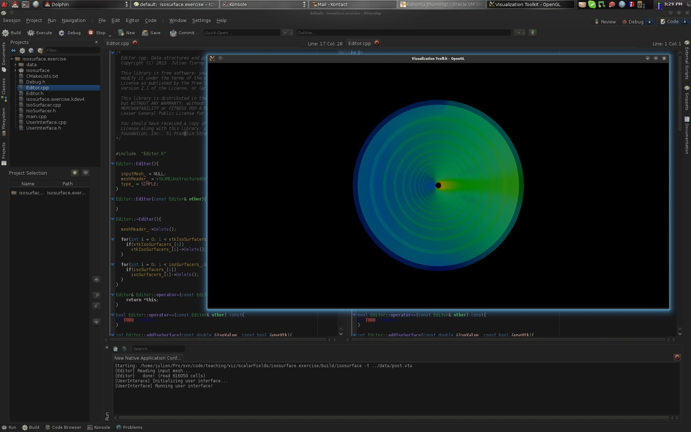
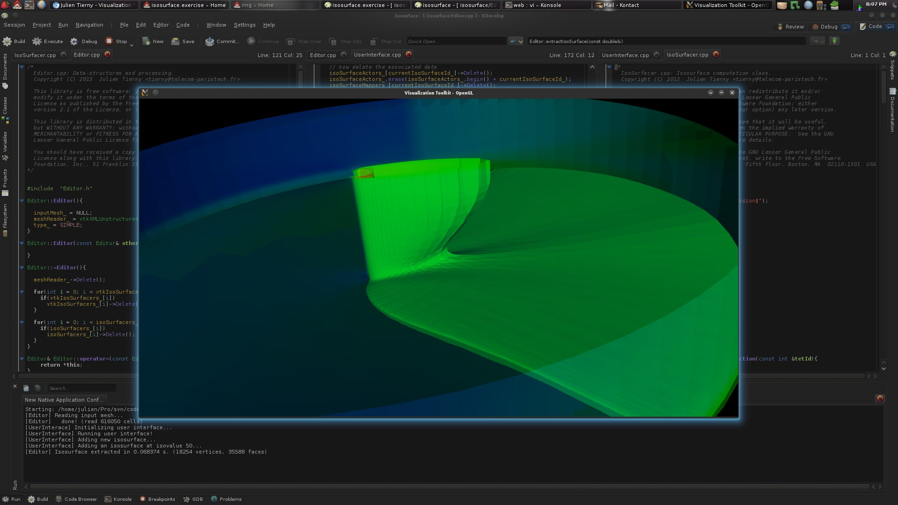
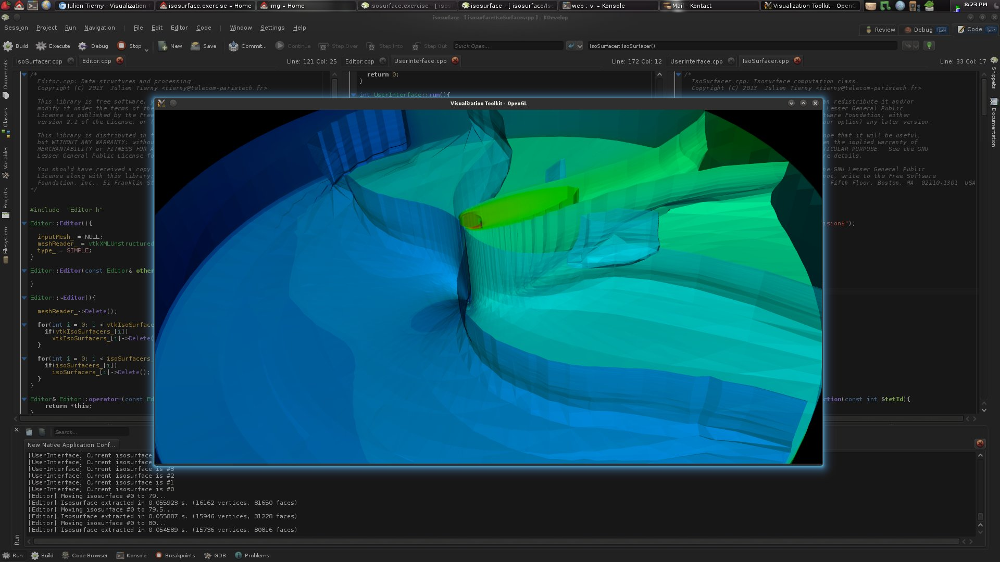
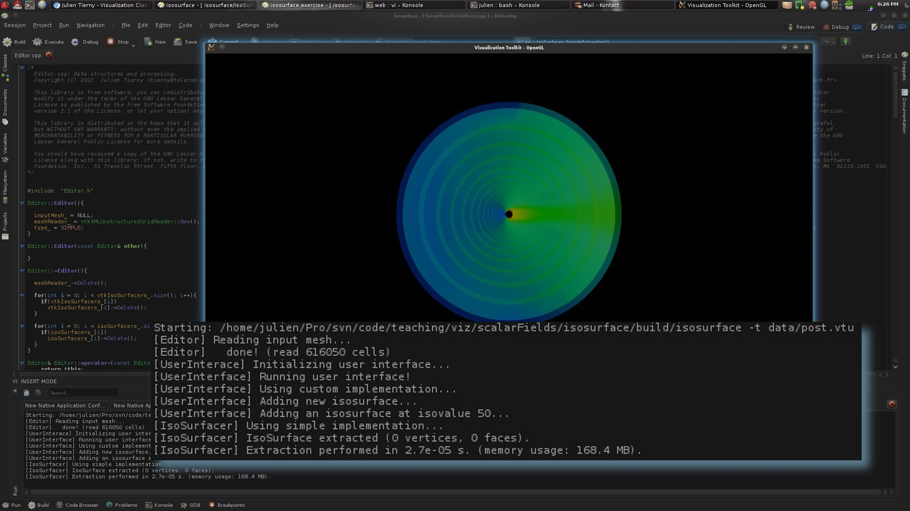
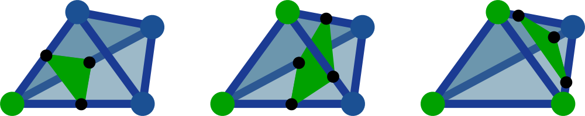
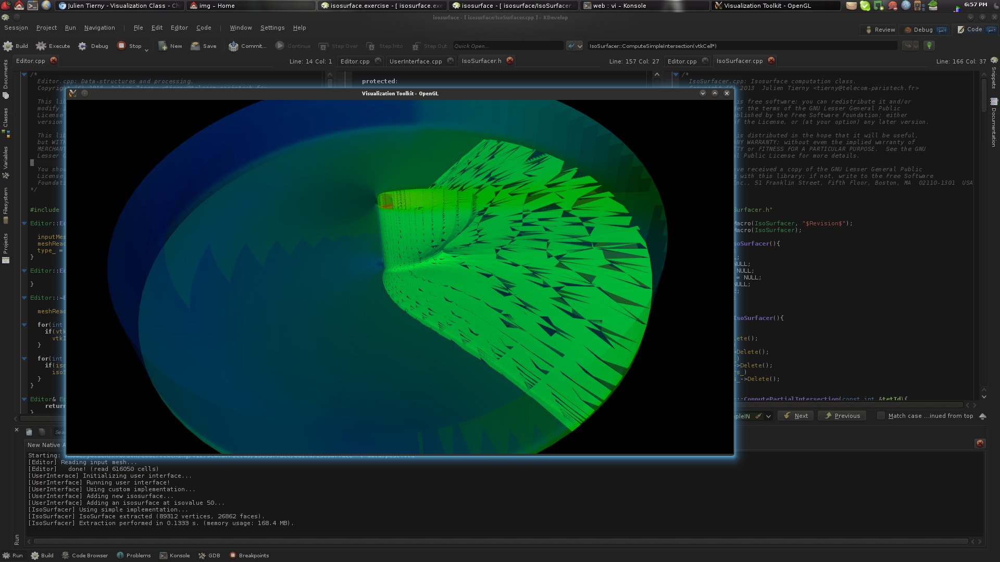
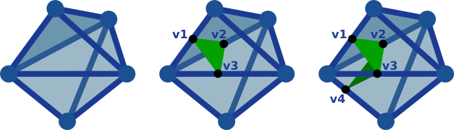
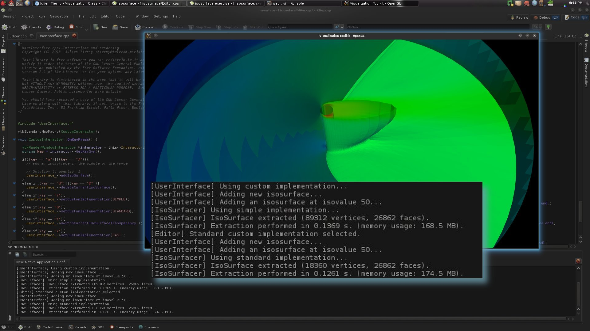
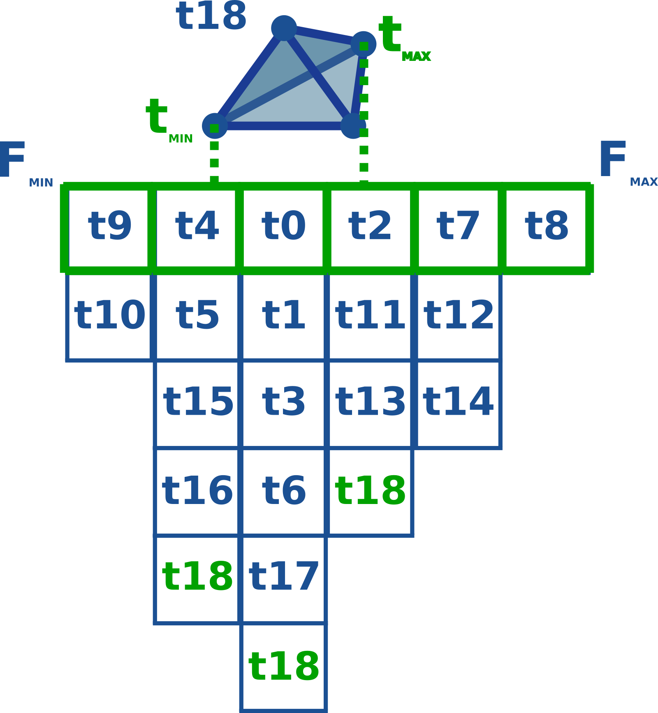
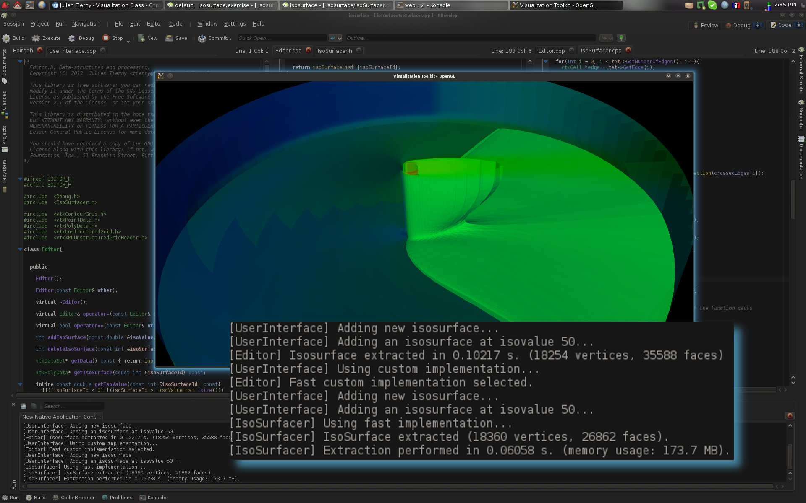

Goals
The primary goal of this exercise is to re-visit from a practical perspective the topics covered during the lecture dedicated to scalar fields, in particular iso-surface extraction on tetrahedral meshes.A secondary goal is to get familiar with the VTK library, especially with its core data-structures, its basic rendering features as well as its pipeline philosophy.
The last, more childish, goal is to teach you how to write your own isosurfacer implementation that even beats VTK in terms of running time!
Software prerequisites
· A recent version of VTK (runtime libraries and headers) should be installed (6.0 or higher);· A recent version of CMake should be installed (2.8 or higher).
The remainder of these exercise instructions assumes that the employed IDE is KDevelop (version 4.4 or higher) under Linux. However, this exercise can be achieved with any IDE under any OS. For non-Linux users, an easy alternative consists in installing a Linux system (such as Kubuntu) within a virtual machine (such as VirtualBox, a readily configured virtual machine is available HERE (md5sum: a59d9cf610ef5ddb7f0f6b338316df0a, password: ttk).
Documentation
· An up-to-date documentation of the VTK library can be found HERE.· A light-speed introduction to C++ programming can be found HERE.
Getting started
Exercise package
· Download the exercise package HERE and extract it under your home directory.Importing the project in KDevelop
· Import the CMake project: Project -> Open / Import Project... and select the file CMakeLists.txt.Project basic configuration
· Under Run -> Configure Launches...· Click on visualizationExercise_IsoSurfaces;
· Click on the "Plus" icon button;
· On the right, Project Target: visualizationExercise_IsoSurfaces/isosurface;
· Under Behaviour, Arguments, enter: -t data/post.vtu
· Under Behaviour, Working Directory, enter the path to the directory where the file CMakeLists.txt is located
· Click on the OK button.
KDevelop basic usage
· To access the sources of the project, click on Projects tab on the left. Double-click on a source file to open and edit it;· To compile the code, press F8;
· To run the code, press Shift+F9;
· To run the code in debug mode, press F9 (to support all the debug features, note that you will have to change the build type from Release to Debug in CMakeLists.txt).

If you followed the previous instructions, at this point, your screen should look like the above screen-shot.
Code skeleton
The code skeleton provided with the exercise package is composed of 3 main classes:· Editor: This class stores the actual data-structures and drives the computations;
· UserInterface: This class is in charge of the rendering management and of the processing of the user interactions;
· IsoSurfacer: This class is right now a place-holder for your custom isosurfacer implementation.
At this point, the code skeleton provides the following features:
· Loading of the input data-set (in our example post.vtu, which is a simulation of liquid oxygen diffusion);
· Display of the boundary of the domain with a color map;
· Basic interactions with the scene (translations, rotations, scaling);
· The rendering of the iso-surfaces to extract (TODO).
Now, let's get the exercise started.
Iso-surface extraction with VTK
First, we will review iso-surface extraction using VTK. To do this, we will use the VTK notion of Filter.In VTK, a filter is a standardized processing unit that accepts data on its input (SetInput()) and delivers data on its output (GetOutput()) after it has been triggered for execution (various parameters can also be defined to tune the filter).
In VTK, filters can be plugged to each other beforehand to form a Pipeline. Hence, a visualization program can be quickly put together by simply connecting filters together and running the pipeline. More information is available HERE.
To trigger the execution of a filter independently of a pipeline, its function Update() should be called.
Question 1
· Once the skeleton program is running, hitting the key 'a' will trigger the code for iso-surface extraction with VTK. In the UserInterface class, where is this event captured?Question 2
· From this point (capture of the 'a' key event), follow the function calls. Which is the function of the Editor class that is in charge of iso-surface extraction with VTK?Question 3
· Complete the function identified in the previous question to extract an iso-surface with VTK. Be careful and pay attention to what this function returns and how its returned value is employed by the rest of the code skeleton (don't hesitate to browse the VTK documentation).If you correctly answered to the previous questions, you should now see the following result by pressing the key 'a'.

At this point, with no further change to the code, most of the keystrokes implemented in the code skeleton should be supported.
Question 4
· Go back to the function of the UserInterface class capturing the key events (question 1). For each keystroke, follow the corresponding function calls in order to understand the purpose of each keystroke.· Then, try to reproduce the following visualization:

Question 5
· Extract an isosurface for the isovalue 57.5 (on the same data-set as before, post.vtu). Then move it up to isovalue 58. The isosurface changed its topology. What kind of topological change is it?How many of these events occur when spanning the entire function range?
Question 6
· Same question as above for an isosurface extracted at the isovalues 63.5 and 64.Question 7
· Regarding questions 5 and 6, what kind of critical point do these topological changes in the level sets correspond to?Implementing your own isosurfacer
In the rest of the exercise, we'll move on to the implementation of your own custom isosurfacer. To proceed, we'll implement a VTK filter. You will find an initial skeleton for this filter in the IsoSurfacer class.When running the program, to switch back and forth between the VTK implementation and your custom implementation, hit the key v. The rest of the keystrokes work as before.
For the following questions, make sure you always execute your program such that the custom implementation is selected (by hitting v once).
Question 8
· In the Editor class, borrow inspiration from the function extractIsoSurfaceVTK() to complete the function extractIsoSurface(), which should be using your own VTK filter class, called IsoSurfacer.If you get it right, without changing anything to the provided code skeleton for the IsoSurfacer class, you should have the following message on the console output:

In the remainder of the exercise, we will implement an isosurface extraction algorithm in the class IsoSurfacer.
The naive way
The naive algorithm for isosurface extraction consists in:· looping over the entire list of tetrahedra of the input tet-mesh, and for each tetrahedron:
· computing, if it exists, the polygon which intersects the tetrahedron along the level set;
· adding the vertices and the faces of that polygon to the output isosurface.
Have a look at IsoSurfacer.h to see how to access the input tet-mesh, the input scalar field and the output surface from within the IsoSurfacer class. The corresponding variables are already initialized for you in the code skeleton.
To implement this algorithm, we will proceed as follows:
·We will implement a function IsCellOnLevelSet() that will check if a cell (or simplex) is intersected by the queried level set;
·We will implement a function ComputeEdgeIntersection() that will compute for a given edge its intersection point with the queried level set;
·We will implement a function ComputerSimpleIntersection(), that will apply for a given tetrahedron the above two functions to generate the polygon which intersects the input tetrahedron along the queried level-set;
·We will implement a function SimpleExtraction(), that loops over the tetrahedra of the input mesh and apply the above function.
Question 9
· In IsoSurfacer.h, complete the function IsCellOnLevelSet(). This function returns true if the cell is traversed by the level set and false otherwise.Warning, this function takes as input the abstract notion of vtkCell, which is dimension independent. In other words, this function should work if either an edge or a tetrahedron is given as argument.
Don't hesitate to have a look at the VTK documentation to understand how to retrieve the vertex Ids of a cell and to retrieve the corresponding scalar values from the scalar field given the vertex Ids.
Question 10
· In IsoSurfacer.h, complete the function ComputeEdgeIntersection(). Given an input edge expressed as a pair of vertex Ids, this function returns the point where the level set intersects the edge.Question 11
· Complete the function IsoSurfacer::ComputeSimpleIntersection(). Given a tetrahedron given as argument, this function computes the polygon which intersects the tetrahedron along the level set and add it to the output isosurface.In particular, this function should loop over all the edges of the tetrahedron. If the current edge is intersected by the level set (IsCellOnLevelSet()), its intersection point with the level set should be computed (ComputeEdgeIntersection()).
Once an intersection point is computed, to create the corresponding vertex in the output isosurface, use the following call (see the VTK documentation for further details): Output->GetPoints()->InsertNextPoint().
This function will return the vertex Id of the newly created vertex. Finally, to create the intersection polygon, use the following code: Output->InsertNextCell(VTK_POLYGON, pointIds) where pointIds is a vtkIdList that you'll have to create to store the vertex Ids of the new vertices you will have created.
As a reminder, the possible intersections of a tetrahedron by a level set are summarized in the following figure:

Question 12
· Complete the function IsoSurfacer::SimpleExtraction(), which loops over the set of tetrahedra of the input mesh. If a tetrahedron is intersected by the level set (IsCellOnLevelSet()), then the actual intersection polygon should be computed (ComputeSimpleIntersection()).Question 13
· If you got the answers right up to this point, here's what you should be visualizing if you extract an isosurface with your own implementation:
This doesn't look great, right?
What do you think went wrong?
Question 14
· To answer and correct the above question, complete the function IsoSurfacer::ReOrderTetEdges(), which given the list of the edges of a tetrahedron which are crossed by the level set, re-order this list such that the list describes a consistent winding around the tetrahedron.Next, use this function appropriately from within the function IsoSurfacer::ComputeSimpleIntersection().
If you got the answer right to this question, your isosurface should no longer exhibit the cracks shown in the previous illustration.
Question 15
· For this question, make sure you're compiling your code in Release mode instead of Debug (in CMakeLists.txt).Now compare the timings, for a unique isovalue, between your custom implementation and the VTK implementation (by hitting v to switch between the two).
Why is your code so slow?!!
The appropriate way
A drawback of the naive approach you've just implemented is that the isosurface is computed as a collection as individual polygons, which are not connected to each other. Hence, the isosurfaces you computed were not manifold surfaces.A simple fix to the previous algorithm would consist in visiting each vertex you created in the isosurface and merge it with any other vertex which is sufficiently close.
This is a terrible fix, with a quadratic runtime complexity if no spatial indexing structure is used.
The appropriate fix would be to store the vertex Id of each created vertex on the edge of the input tet-mesh where it has been created.
In that way, when computing the intersection polygon of a tetrahedron with the level set, instead of re-computing all the intersection points (and vertices), those already created by already visited neighbor tetrahedra could be re-used directly.
In the following example, the intersection of the first tetrahedron by the level set will yield the creation of the vertices v1, v2 and v3 (and of the polygon v1-v2-v3), while the intersection of the second, neighbor, tetrahedron, will only yield the creation of the vertex v4 and the vertices v2 and v3 will be re-used to create the corresponding intersection polygon (v3-v2-v4).

Unfortunately, the VTK data-structure vtkUnstructuredGrid does not explicitly encode the edges with Ids, like it is done for vertices. A slightly more memory-expensive workaround consists in storing the Ids of the created vertices within each tetrahedron (in the above example, we will store for the first tetrahedron the vertices v1, v2 and v3).
Question 16
· In Editor::extractIsoSurface(), call the following function IsoSurfacer::SetType() with the variable Editor::type_ as argument, before the execution of the filter.This will enable you to switch between your naive isosurfacer implementation and your new one at run time. Once the program is running, hit s to select the (simple) naive implementation, Shift+s to select the (standard) appropriate implementation, and x to select the fast implementation (todo).
Question 17
· Given a tetrahedron, the query of its neighbor tetrahedra is quite inefficient with VTK. Therefore, we will pre-compute these queries for each tetrahedron once for all, as a pre-processing stage, during the loading of the input tet-mesh.At the end of the function Editor::loadInputMesh(), add the necessary code to fill the vector tetNeighbors_ (see Editor.h). This vector should have as many entries as the number of tetrahedra in the input tet-mesh. The i-th entry of this vector, corresponding to the tetrahedron with Id i, will be a vector composed of the Ids of its neighbor tetrahedra.
To retrieve the list of neighbor cells of a given cell, use the function vtkUnstructuredGrid::GetCellNeighbors() (see the VTK documentation for further details).
Question 18
· Modify IsoSurfacer.h such that a pointer to Editor::tetNeighbors_ can be passed to the IsoSurfacer filter in the same manner the queried isovalue was passed to the filter.Question 19
· Modify the function Editor::extractIsoSurface() to pass the vector of tethedra neighborhoods to the IsoSurfacer filter, prior to its execution.Question 20
· In IsoSurfacer.h, complete the EdgeIntersection class, which models the intersection of an edge of the input tet-mesh by the level set. This class should contain the Ids of the vertices of the corresponding edge, as well as the Id of the created vertex in the output isosurface.Question 21
· Borrow inspiration from the function IsoSurfacer::ComputeSimpleIntersection() to complete the function IsoSurfacer::ComputePartialIntersection(). Similarly to our previous implementation, this new function computes the intersection polygon of a tetrahedron with a level-set.However, this new implementation should store within the current tetrahedron the vertex Id of every vertex of the intersection polygon and further re-use this information when visiting neighbor tetrahedron.
Once the program is running, to select this new implementation instead of the naive one, hit Shift+s.
Question 22
· Borrow inspiration from the function IsoSurfacer::SimpleExtraction() to complete the function IsoSurfacer::StandardExtraction(). This function should use your new implementation (IsoSurfacer::ComputePartialIntersection()) instead of the naive one.If you got the answers right up to this point, you should have the following vertex count for the isosurface at isovalue 50 (it should be much smaller in comparison to the naive implementation):

Question 23
· As shown in the above screen-shot, the new implementation might be a little faster than the naive one. Why is that so?The fast way
We will now finally move on to a fast implementation of isosurface extraction. In particular, in this implementation, we would like to avoid looping over the entire set of tetrahedra of the input tet-mesh to compute the isosurface, but only those that are good candidates for an intersection with the level set.The nice way to do it would be to implement a self-balanced interval tree and to store in this tree, in a pre-processing stage, each tetrahedron according to its function span (to its function interval).
A simpler implementation with comparable running times can be obtained with an interval table. The construction of this data-structure needs to happen in a pre-processing stage, at the end of Editor::loadInputMesh(). The construction process is summarized with the following figure:

The interval table is a vector of vectors of tetrahedron Ids. The size of the table (represented by the width of the green array) is a parameter of the table, that needs to be set in the construction of the table.
To fill the table, all the tetrahedra of the input tet-mesh need to be visited. For each tetrahedron, its function range should be identified (tmin and tmax in the illustration). According to this function span, the Id of the tetrahedron should be pushed in all the intervals in the tetrahedra's function span.
In the above example, the interval table has a size of 6, which means that the entire function range (from Fmin to Fmax) is split in 6 intervals. If the global minimum and the global maximum of the scalar field have value 0 and 60 respectively, these intervals, from left to right, will correspond to the function spans [0, 10[, [10, 20[, [20, 30[, [30, 40[, [40, 50[, [50, 60].
Then, when adding a new tetrahedron (here with Id 18), according to its minimum and maximum values, its Id will pushed in the appropriate vectors (3 in the middle in this example).
At run time, when computing an isosurface, given the isovalue, the interval table will identify which interval should be considered, and only the tetrahedron in this interval should be visited for isosurface extraction. This will drastically reduce the number of visited tetrahedra per isosurface extraction, hence yield a faster extraction.
Question 24
· A placer holder for your interval table is located in IsoSurfacer.h (the class TetIndex). Declare the appropriate variables as protected member.Question 25
· Implement the function TetIndex::setBounds(), which will be called in a pre-processing stage and which will store the global function range (global and minimum and maximum) passed as argument.Question 26
· Implement the function TetIndex::setResolution(), which will be called in a pre-processing stage and which sets the size of the table (passed as argument).Question 27
· Implement the following function TetIndex::addTet() which will be called in a pre-processing stage and which, given the function span and the Id of a tetrahedron (passed as arguments), stores the tet Id in the table.Question 28
· Implement the following function TetIndex::getCandidates() which given an isovalue, returns a pointer to the corresponding interval (returns a pointer of a vector of tetrahedron Ids).Question 29
· At the end of Editor::loadInputMesh(), add the necessary code to use the functions you implemented in the previous questions, in order to fill the interval table (using the variable Editor::tetIndex_).A reasonable value for the resolution of the interval table is 500.
Question 30
· Modify IsoSurfacer.h such that a pointer to Editor::tetIndex_ can be passed to the IsoSurfacer filter in the same manner the queried isovalue was passed to the filter.Question 31
· Borrow inspiration from the function IsoSurfacer::StandardExtraction() to complete the function IsoSurfacer::FastExtraction(). This function should make use of the interval table to only traverse a limited number of tetrahedra. Complete the function IsoSurfacer::FastExtraction().If you got the answers right up to this point, you should observe a reduction in running time, in comparison to the VTK implementation, similar to the one shown in the following figure:

If this is the case, congratulations! You've just beaten VTK!
Extra questions
For those who found this exercise a little boring, here's a few more bonus questions that will help you implement the fastest algorithm for isosurface extraction.Yes we can!
We can go even faster, in particular by making the extraction algorithm only visit the exact set of tetrahedra which are crossed by the level set.Extra question 1
· Implement a function IsoSurfacer::ExtractContour(). This function takes as argument the Id of a tetrahedron that is known to be crossed by the queried isovalue (IsoSurfacer::Value). The function then extracts the connected component of level-set (called contour) which passes through this tetrahedron.In particular, this function should handle a queue (std::queue) of tetrahedron Ids (containing initially only the input tetrahedron). Each time the intersection of a tetrahedron by the level set is computed (with ComputePartialIntersection()), the current tetrahedron should be popped out of the queue and its neighbors whose function span is intersected by the isovalue (and which haven't been visited before) should be added to the queue. This process should be iterated until the queue is empty.
Extra question 2
· We recall that in a PL scalar field, a minimum (respectively a maximum) is a vertex such that all its neighbors have a higher (respectively lower) function value. A regular vertex is a vertex such that the group of its direct neighbors with lower function value forms a single connected component AND that the group of its direct neighbors with higher function value forms a single connected component too. Any other configuration is called a saddle.Implement a function in the Editor class that identifies all the saddles of the field.
Extra question 3
· Implement a function Editor::partitionMesh() which segments the mesh along EACH contour of EACH saddle. Each resulting partition should be stored as a std::set of pairs (vertex Ids - vertex function value). An std::set is a readily available implementation of self-balanced binary search trees. Make sure to configure this class properly, such that the vertices get ordered by function value.To create a partition, grow a region starting from a regular vertex and add each of its neighbors to the partition if the corresponding edge crosses no saddle contour. Re-iterate the process until the current region cannot be grown anymore. Re-iterate the entire process until all the regular vertices of the mesh are associated with a partition.
Extra question 4
· Borrow inspiration from the TetIndex class to create a PartitionIndex class. Similarly, this class should implement an interval table, but for partitions (not tetrahedra).Extra question 5
· Modify the Editor class to build your partitions and your partition index at the end of Editor::loadInputMesh(). The pre-processing we implemented so far in these extra questions is not the best algorithm out there, but it's by far the simplest to implement.Modify also the IsoSurfacer class to be able to pass it a reference to the partition index prior to the isosurface extraction.
Extra question 6
· Implement a function IsoSurfacer::OptimalExtraction() to extract a level set. This function should query the partition index to retrieve all the partitions that are intersected by the level set.By construction, the restriction of the level set to each intersected partition should be a single connected component.
Thus, once valid partition(s) have been found, for each partition, the vertex which has the closest function value with the queried isovalue should be identified in the partition (use the function std::set::lower_bound()). We will call this vertex a seed vertex.
Given a seed vertex, among the tetrahedra which contains this vertex, there has to be at least one tetrahedron which is intersected by the level set (IsoSurfacer::IsCellOnLevelSet()). Let's pick arbitrarily one of these and call it a seed tetrahedron.
Last, for all the seed tetrahedra that have been identified up to this point, run the function IsoSurfacer::ExtractContour().
As a result, this algorithm will ONLY visit the tetrahedra which are indeed intersected by the level set, hence yielding an optimal run-time complexity for isosurface extraction.
Updated on February 11th, 2020.